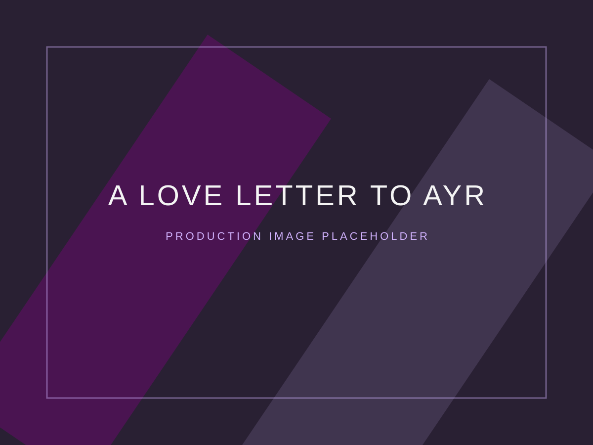
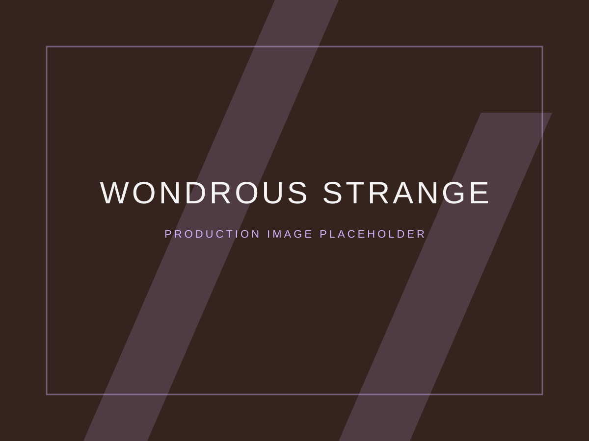

Second Sight
View project ↗


1 / 3
Co-founder · Co-creator · Performer
A circus artist working across acrobatics, physical theatre, puppetry and devised performance.
Specialisms
Ludic Acid projects

Selected experience
A selection of collaborative performance work across circus, dance and physical theatre.


Co-deviser and performer, reworking a 40-minute outdoor production into a 65-minute indoor performance.
Bragi Award winner · Mime London · Manipulate Festival · Edinburgh Fringe
★★★★
The Guardian
“Genuinely innovative” ★★★★
Lyn Gardner, The Stage

Devising and performing as a hand-to-hand base and acrodancer.

A trio trampoline street-theatre piece, performing as acrobatic base and trampolinist.

Research for an RSC-commissioned redevelopment, working in acrobatic dance and physical theatre.
Moving image
Education
University College London
BSc Chemistry, First Class Honours